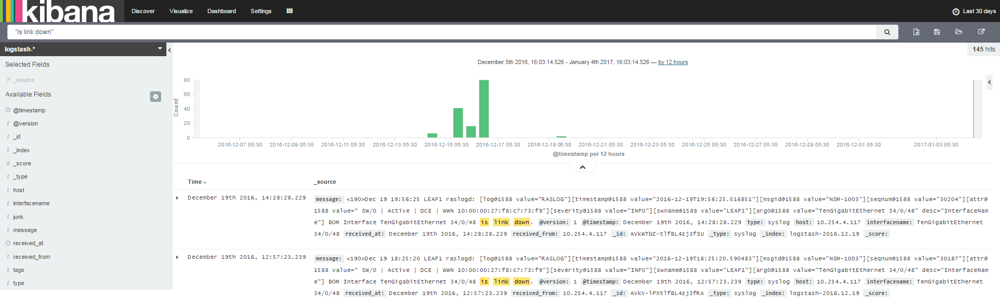
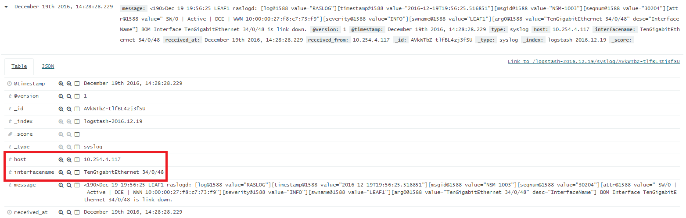
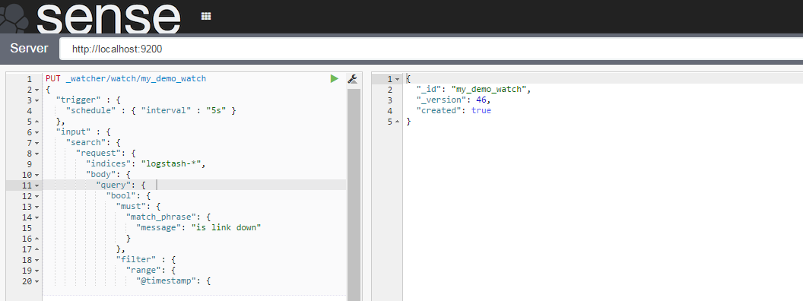

Jan 12, 2017
by Siddharth Krishna
Recently we explained how to use Syslog with Splunk & StackStorm to auto-remediate a link going down on a switch. Splunk is a widely used log management tool but there’s also a popular open source alternative – Elastic Stack (formerly the ELK Stack: Elasticsearch, Logstash and Kibana). So if you’re using the Elastic Stack, and are looking to automate event remediation in your environment, you’re at the right place! In this post, we’re taking the same use case as before and talking about how to set up the Elastic stack to collect syslog data and trigger event-based network remediation workflows using StackStorm.
No. Everything in relation with StackStorm (webhooks, workflows, actions and integrations) remains the same as documented in the earlier blog. Optionally, you could create a new webhook URL (eg. elk_link_flap) specifically for your Elastic Stack setup. Here, our primary focus will be on configuring the Elastic Stack for an end-to-end demonstration of the auto-remediation use case.
| name: "elk_link_flap_webhook_rule" | |
| enabled: true | |
| description: "ELK link flap webhook rule" | |
| trigger: | |
| type: "core.st2.webhook" | |
| parameters: | |
| url: "elk_link_flap" | |
| criteria: {} | |
| action: | |
| ref: st2_demos.link_flap_remed_workflow | |
| parameters: | |
| host: "{{trigger.body.host}}" | |
| interface: "{{trigger.body.interface}}" |
First step is to define data source for syslog as input and Elasticsearch as the output in the Logstash configuration. UDP port 514 is used for syslog. The Logstash configuration file is located at /etc/logstash/conf.d/. Create a new config file eg. lsconfig.conf if one does not already exist and ensure that there’s only one config file at this location for Logstash to use. Add the following content:
| input { | |
| udp { | |
| port => 514 | |
| type => syslog | |
| } | |
| } | |
| output { | |
| elasticsearch { hosts => ["127.0.0.1:9200"] } | |
| stdout { } | |
| } |
Restart the Logstash service:
sudo service logstash start
On Kibana, define a new Index Pattern logstash-* and select it in the Discover dashboard. Assuming that your network devices are pointing to the Elastic Stack server for syslog, you should now start seeing the syslog messages from the devices on Kibana dashboard.

To be able to pass relevant information such as the switch interface name (for the link which went down) and IP address to the StackStorm Auto-Remediation workflow, the info has to be first extracted from the log message body. We use Logstash Filters & Kibana Fields to do this. Add the following filter to the Logstash config and restart all Elastic Stack services.
| filter { | |
| if [type] == "syslog" { | |
| grok { | |
| match => { "message" => "Interface %{GREEDYDATA:interfacename} is link down" } | |
| add_field => [ "received_at", "%{@timestamp}"] | |
| add_field => [ "received_from", "%{host}" ] | |
| } | |
| } | |
| } |
Once this is done, fields interfacename and host will start getting auto-populated for each syslog message. Yes, interfacename extraction will work only for “link down” syslog messages but that’s good enough for our demonstration. Of course, you can use more specific grok text pattern matching for better filtering.

The Sense App is nice for interacting with the REST API of Elasticsearch. We use it to create a watch to trigger our workflow. It is a convenient way to quickly test out elastic search configurations via the REST interface. Follow the official documentation here to install Sense.

We use Elasticsearch Watcher Plugin for the alerting functionality required for triggering the StackStorm workflow. After installing the plugin, use Sense to create a watch: an alert which calls a webhook into StackStorm whenever the “link down” syslog message is received from a switch (determined by a match criteria and a condition).
Watcher helps identify changes in your data that are interesting to you by using the Elasticsearch query language. It provides multiple alerting options with built-in integrations and comes with a powerful webhook output for integration with your existing monitoring infrastructure or any third-party system.
Watch definition:
| PUT _watcher/watch/my_demo_watch | |
| { | |
| "trigger" : { | |
| "schedule" : { "interval" : "5s" } | |
| }, | |
| "input" : { | |
| "search": { | |
| "request": { | |
| "indices": "logstash-*", | |
| "body": { | |
| "query": { | |
| "bool": { | |
| "must": { | |
| "match_phrase": { | |
| "message": "is link down" | |
| } | |
| }, | |
| "filter" : { | |
| "range": { | |
| "@timestamp": { | |
| "from": "now-8s", | |
| "to": "now" | |
| } | |
| } | |
| } | |
| } | |
| } | |
| } | |
| } | |
| } | |
| }, | |
| "condition" : { | |
| "compare" : { "ctx.payload.hits.total" : { "gt" : 0 }} | |
| }, | |
| "actions" : { | |
| "my_webhook" : { | |
| "webhook" : { | |
| "scheme" : "https", | |
| "port" : 443, | |
| "method" : "POST", | |
| "host" : "bwc", | |
| "path" : "/api/v1/webhooks/elk_link_flap?st2-api-key=XXXXXXXXXXXXXXXXXXXXXXXXXXXXXXXXXXXXXXXXXXXXXXXXXXXXXXXXXXXXXXXXXXXXXXXXXXXXXXX", | |
| "headers": { | |
| "Content-Type": "application/json" | |
| }, | |
| "body" : "{\"host\": \"{{ctx.payload.hits.hits.0._source.host}}\", \"interface\": \"{{ctx.payload.hits.hits.0._source.interfacename}}\"}" | |
| } | |
| } | |
| } | |
| } |
The watch has the following characteristics:
logstash-* containing string “is link down” received in the last 8 seconds.host (switch IP address) and interfacename (identity of the interface that went down).We are now ready with the configurations and its time to verify our automation. Trigger the event (in this case, link down), confirm that the syslog for the event shows up on the Kibana dashboard and finally validate the execution of the StackStorm workflow to see the programmed auto-remediation in action. That’s it. You now have syslog driven auto-remediation working in your environment with the Elastic Stack!